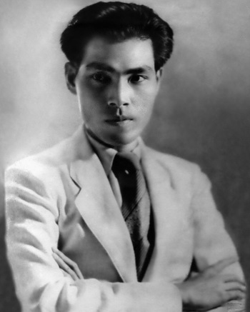

Hoàng Đạo (chữ Hán: 黃道; 1907-1948) là một nhà văn Việt Nam, một trong những cây bút của Tự Lực Văn Đoàn. Ông còn những bút danh khác Tứ Ly, Tường Minh...

Xuất thân
Hoàng Đạo tên thật là Nguyễn Tường Long (阮祥龍). Ông sinh ngày 16 tháng 11 năm 1907 tại làng Hàn Giang, huyện Cẩm Giàng, tỉnh Hải Dương, nguyên quán làng Cẩm Phô, huyện Điện Bàn, tỉnh Quảng Nam.
Ông nội Hoàng Đạo là tri huyện Cẩm Giàng, gọi là Huyện Giám, có người con trai duy nhất là ông Nguyễn Tường Nhu làm Thông Phán, gọi là Thông Nhu, hay Phán Nhu. Nguyễn Tường Nhu lập gia đình với bà Nguyễn Thị Sâm, có được 7 người con:
- Nguyễn Tường Thụy, tổng giám đốc bưu điện
- Nguyễn Tường Cẩm, kỹ sư canh nông, giám đốc báo Ngày Nay
- Nguyễn Tường Tam, tức nhà văn Nhất Linh
- Nguyễn Tường Long, tức nhà văn Hoàng Đạo
- Nguyễn Thị Thế
- Nguyễn Tường Lân (Vinh), tức nhà văn Thạch Lam
- Nguyễn Tường Bách, bác sĩ
Gia đình Hoàng Đạo sống ở Cẩm Giàng, một huyện nhỏ. Cha ông mất sớm, cả nhà lâm vào cảnh khó khăn. Lúc đi học ở trường huyện, Hoàng Đạo mang tên Nguyễn Tường Tư (阮祥肆), nhưng vì không đủ tuổi đi thi, gia đình ông khai tăng thêm bốn tuổi. Trên giấy khai sinh ghi lại tên là Nguyễn Tường Long, sinh 3 tháng 4 năm 1903.
Sau bậc tiểu học, Hoàng Đạo bị ốm nên tự học tại nhà. Năm 1924, ông đậu bằng Cao đẳng tiểu học Pháp, và liền đó đỗ vào trường Luật Đông Dương tại Hà Nội. Năm 1927 tốt nghiệp, Hoàng Đạo vào làm tham tá Ngân khố Hà Nội. Ông tiếp tục học thêm, đậu tú tài Pháp và chuyển sang ngành tư pháp, làm tham tá lục sự từ năm 1929, trong các toà "Tây án" ở các tỉnh Trung, Nam, Bắc. Trong thời gian này, có lần đã được bổ tri huyện, nhưng ông từ chối.
Tự Lực Văn Đoàn
Năm 1932, Hoàng Đạo đang làm việc ở Sài Gòn rồi được đổi về Hà Nội. Nhất Linh mua lại tờ Phong Hóa của Phạm Hữu Ninh và Nguyễn Xuân Mai. Ngày 22 tháng 9 năm 1932 báo Phong Hoá tái bản với nội dung và ê kíp mới. Đến năm 1933, Nhất Linh thành lập Tự Lực Văn Đoàn gồm có:
* Nhất Linh (Nguyễn Tường Tam)
* Khái Hưng (Trần Khánh Giư), còn gọi là Nhị Linh
* Hoàng Đạo (Nguyễn Tường Long)
* Thạch Lam (Nguyễn Tường Lân)
* Tú Mỡ (Hồ Trọng Hiếu)
* Thế Lữ (Nguyễn Thứ Lễ)
Về sau có thêm Xuân Diệu và Trần Tiêu - em của Khái Hưng. Còn có một số nhà văn khác cộng tác chặt chẽ với Tự Lực Văn Đoàn như: Trọng Lang, Huy Cận, Thanh Tịnh, Đoàn Phú Tứ. Cơ quan ngôn luận của Tự Lực Văn Đoàn là báo Phong Hóa.
Cùng năm đó, Hoàng Đạo lập gia đình với bà Marie Nguyễn Bình, họ có cùng nhau bốn người con: ba gái và một trai.
Trên Phong Hoá, Hoàng Đạo lấy bút hiệu là Tứ Ly, viết những bài đả kích châm biếm hệ thống quan lại của chính quyền thuộc địa và Triều đình Huế, bài trừ hủ tục trong xã hội Việt Nam. Năm 1936 tờ Phong Hóa bị đóng cửa vì Hoàng Đạo viết bài châm biếm Hoàng Trọng Phu. Tờ Ngày Nay, trước ra kèm với Phong Hóa, tiếp tục và kế tiếp Phong Hóa. Trên Ngày Nay, trong mục Trước vành móng ngựa, Hoàng Đạo đã ghi lại những tình cảnh bi hài của dân nghèo trước toà tiểu hình Hà Nội.
Tham gia chính trị
Năm 1938, Nguyễn Tường Tam thành lập đảng Hưng Việt, rồi đổi tên là đảng Đại Việt Dân Chính năm 1939. Vì đảng chủ trương công khai chống Pháp và lật đổ triều đình Huế, cuối năm 1940, Hoàng Đạo, Khái Hưng, Nguyễn Gia Trí bị Pháp bắt và bị đầy lên Sơn La. Mãi đến năm 1943 ông mới được giải về và quản thúc tại Hà Nội. Trong thời gian đó, Thạch Lam và Nguyễn Tường Bách tiếp tục quản trị tờ Ngày Nay đến cuối năm 1941, mới bị đóng cửa. Năm 1942, Nhất Linh chạy sang Quảng Châu, Thạch Lam mất tại Hà Nội.
Theo lệnh của Nhất Linh từ Trung Quốc gửi về, báo Ngày Nay, với Hoàng Đạo, Khái Hưng, Nguyễn Gia Trí và Nguyễn Tường Bách, lại tục bản, khổ nhỏ ngày 5 tháng 3 năm 1945 và trở thành cơ quan ngôn luận của Việt Nam Quốc Dân Đảng.
Ngày 19 tháng 8 năm 1945. Việt Minh nắm chính quyền. Ngày 25 tháng 8 năm 1945 vua Bảo Đại thoái vị. Ngày 2 tháng 9 năm 1945 Hồ Chí Minh tuyên bố độc lập. Ngày 2 tháng 3 năm 1946 Chính phủ liên hiệp ra đời.
Cuối tháng 7 năm 1946, Hoàng Đạo, Nguyễn Tường Bách và 6 bạn đồng hành đến Hà Khẩu, lên Côn Minh rồi sang Quảng Châu. Ngày 19 tháng 12 năm 1946, Khái Hưng mất ở Xuân Trường tỉnh Nam Định.
Hoàng Đạo mất đột ngột ngày 22 tháng 7 tháng 1948, trên chuyến xe lửa từ Hương Cảng về Quảng Châu, thi hài ông được an táng tại thị trấn Thạch Long.
Tác phẩm
* Trước vành móng ngựa (phóng sự, Đời Nay, Hà Nội, 1938)
* Mười điều tâm niệm (tiểu luận, Đời Nay, 1939)
* Con đường sáng (tiểu thuyết, Đời Nay, 1940)